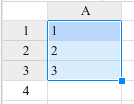
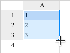

Patterns and efficiency are key ideas in spreadsheets. A standard feature is the little blue square on a selection of cells.
Enter the numbers 1, 2, and 3 the first three rows of column A. Then select those three cells. It should look like this:

When the cursor is over the blue square, it should lool like a plus:

Click and drag the blue square down to extend the pattern to be at least 20 long.
Once you're done, check your work.